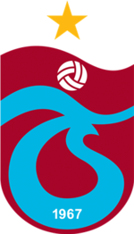

Trabzonspor, 2 Ağustos 1967'de[2] kurulan Trabzon, Türkiye merkezli spor kulübü. Özellikle futbol şubesiyle tanınan kulüp, profesyonel futbol ligleri tarihinde şampiyon olan 5 kulüpten biri ve şampiyon olmayı başaran ilk Anadolu kulübüdür. Kulübün başkanlığını Ahmet Ağaoğlu yapmaktadır. Basketbol şubesininse ayrı bir yönetim kurulu olup; bu şubenin başkanlığını Abiş Hopikoğlu üstlenmektedir.[4][5] Trabzonspor, güncel olarak futbol, basketbol ve hentbol dallarında birinci lig düzeyinde temsil edilmektedir. Bu dalların yanında yüzme, judo,boks,masa tenisi ve atıcılık olmak üzere bazı amatör spor dallarında da etkindir[6]. Atletizm şubesinin etkinlikleri 25 Ağustos 2008 itibarıyla,önceden Erkekler 2. Lig'de yer alınan voleybol şubesinin etkinlikleri 2016 itibarıyla durdurulmuştur.[7] Birinci lig düzeyinde kulübün toplamda 7 şampiyonluğu vardır. Bu şampiyonlukların tümü, erkeklerde 6[8] ve kadınlarda 1[9] olmak üzere futbol şubesine aittir. Trabzonspor Futbol Takımı (erkekler), şampiyon olmuş beş takımdan biri ve İstanbul dışından şampiyon olmuş ilk takımdır.[10] Bunun yanında, futbol erkek takımı armasında yıldız olan -yıldız, Süper Lig'de beş şampiyonlukta bir verilir[11]- 4 Türk takımından biridir.[8] Uzun süre bir "futbol kulübü" olarak anılan Trabzonspor, 2008'de TB2L takımlarından Alpella'yı satın alarak, ilk kez futbol dışında bir takım sporunda ikinci lig ve üzeri bir düzenlemeye katılmaya hak kazanmıştır. Trabzonspor Basket, ikinci lige terfi ettikten iki yıl sonra (2010); Türkiye Basketbol Ligi'ne çıkmıştır. 2014-2015 sezonunda, basketbol şubesi EuroChallenge'de finale yükselerek; takım sporları baz alındığında kulüp tarihinin Avrupa kupalarındaki ilk final karşılaşmasını oynamıştır.[12] Trabzonspor, 1984'te kentteki hentbol kulüplerini birleştirerek bir takım kurmayı planlamıştır, ancak daha sonra bundan vazgeçmiştir.[13] Bu olaydan 26 yıl sonra (2010) 24 Şubat Hentbol Takımı'nı bünyesine katarak, Türkiye Erkekler Hentbol Süper Ligi'nde etkinlik göstermeye başlamıştır. Böylece hentbol, kulüpte icra edilen üçüncü takım sporu olmuştur.
|  | |
| Tam ad | Trabzonspor Kulübü |
|---|---|
| Takma ad | Kaplanlar |
| Kuruluş | 2 Ağustos 1967 |
| Resmî site | trabzonspor.org.tr |


Copyright © 2020